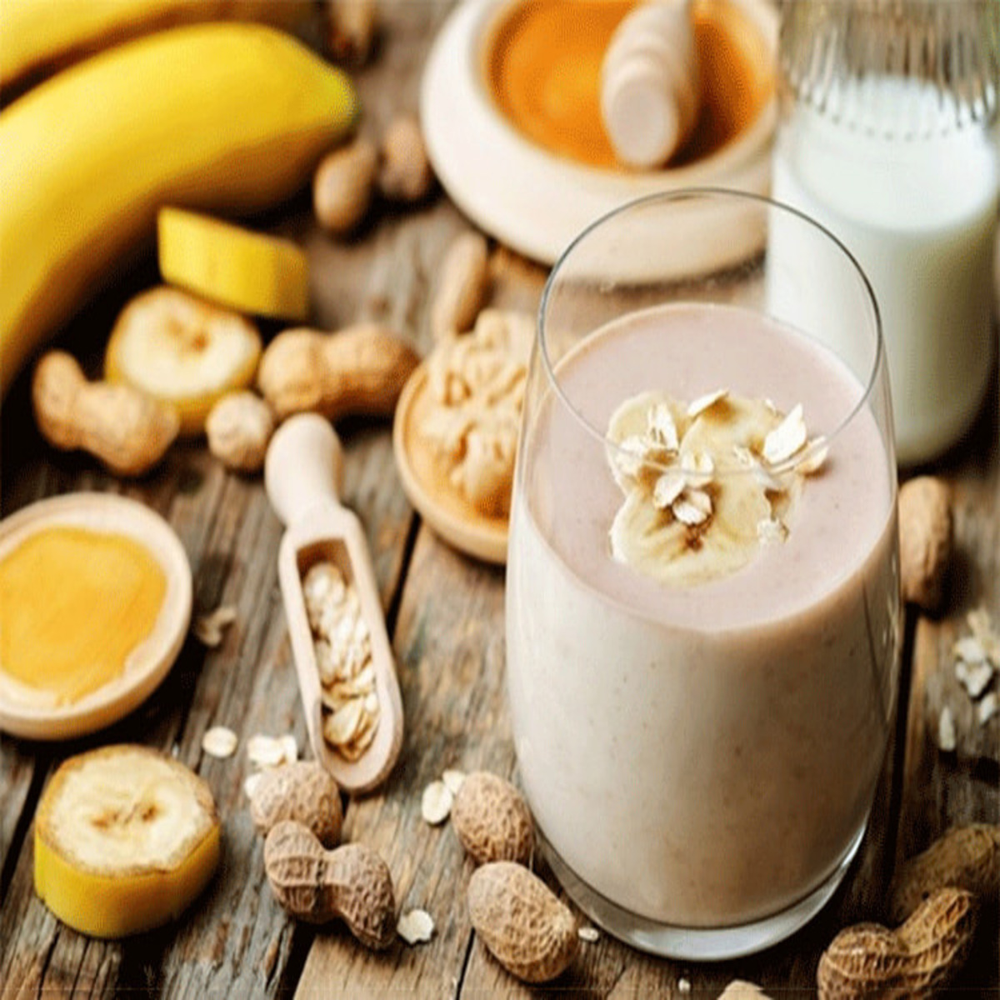
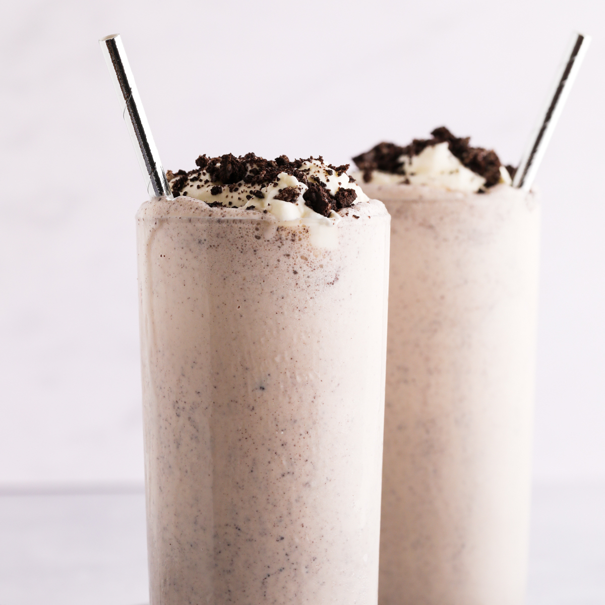

<div style="margin-top: 20px">
  <div class="container">
    <div class="text-center">
      <h2 class="section-heading text-uppercase">Best Seller</h2>
    </div>
    <ul class="timeline">
      <li>
        <a href="../../assets/img/sinh-to-bo-chuoi-dau-phong.jpg" target="_blank">
          <div class="timeline-image">
            
          </div>
        </a>
        <div class="timeline-panel">
          <div class="timeline-heading">
            <h4>Chuối bơ đậu phộng</h4>
          </div>
          <div class="timeline-body">
            <p class="text-muted">
              Sự kết hợp giữa chuối chín và bơ đậu phộng tạo nên một món ăn vặt giàu dinh dưỡng, bổ sung năng lượng nhanh chóng. Bơ đậu phộng cung cấp protein và chất béo tốt cho cơ thể, trong khi chuối chứa nhiều vitamin và khoáng chất. Món ăn này rất thích hợp để dùng làm bữa sáng hoặc bữa ăn nhẹ.
            </p>
          </div>
        </div>
      </li>
      <li class="timeline-inverted">
        <a href="../../assets/img/cookieandcream.jpg" target="_blank">
          <div class="timeline-image">
            
          </div>
        </a>
        <div class="timeline-panel">
          <div class="timeline-heading">
            <h4>Cookie n' Cream</h4>
          </div>
          <div class="timeline-body">
            <p class="text-muted">
              Sự kết hợp hoàn hảo giữa vị ngọt ngào của bánh Oreo Double Stuf, vị béo ngậy của kem tươi và sự mát lạnh của đá xay. Mỗi ngụm uống là một trải nghiệm tuyệt vời với lớp đá xay mịn màng, tan chảy trong miệng, mang đến cảm giác sảng khoái, mát lạnh. Ly đồ uống được trang trí bắt mắt với lớp kem tươi phủ đầy, rắc thêm vụn bánh Oreo và một chiếc bánh Oreo nguyên chiếc, chắc chắn sẽ làm hài lòng mọi thực khách.
            </p>
          </div>
        </div>
      </li>
      
  
      <li class="timeline-inverted">
        <div class="timeline-image">
          <h4>
            Be Part
            <br />
            Of Our
            <br />
            Cafe!
          </h4>
        </div>
      </li>
    </ul>
  </div>
</div>
